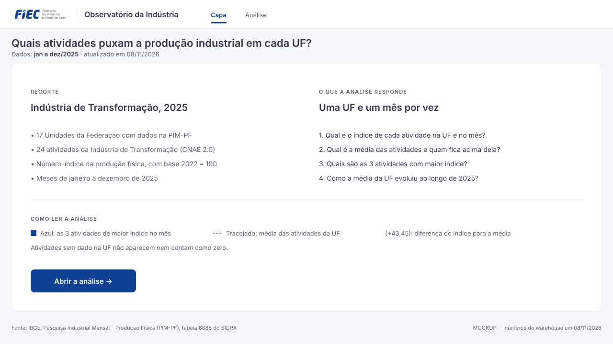
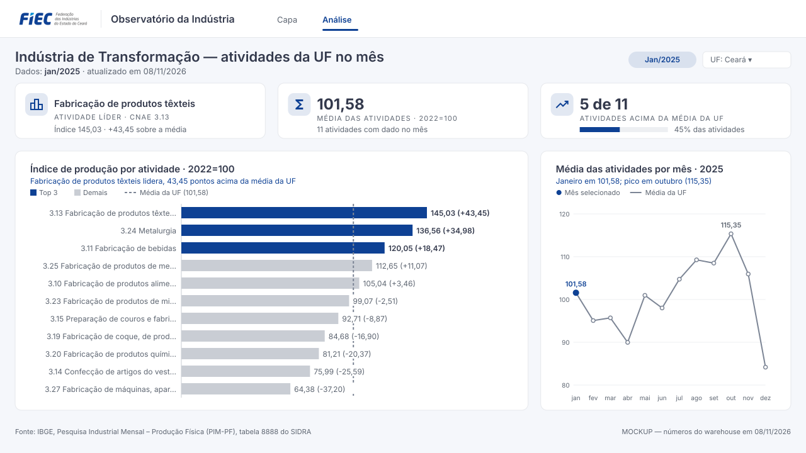

1. Capa
Quais atividades puxam a produção industrial em cada UF?

- Recorte: 17 UFs, 24 atividades da Indústria de Transformação, Número-índice 2022 = 100, meses de 2025.
- O que a análise responde: as quatro perguntas que a tela de análise resolve.
- Como ler: significado da cor de destaque, da linha tracejada e dos números entre parênteses.
- Abrir a análise: botão de navegação para a segunda tela.
2. Análise
Indústria de Transformação — atividades da UF no mês (Ceará, janeiro de 2025)

- Atividade líder: Fabricação de produtos têxteis, índice 145,03, 43,45 pontos acima da média.
- Média das atividades: 101,58, com 11 atividades com dado no mês.
- Acima da média: 5 de 11 atividades.
- Índice de produção por atividade: barras ordenadas, top 3 em destaque, linha da média e diferença entre parênteses.
- Média das atividades por mês: 2025 inteiro, com o mês selecionado em destaque; não responde ao filtro de mês.